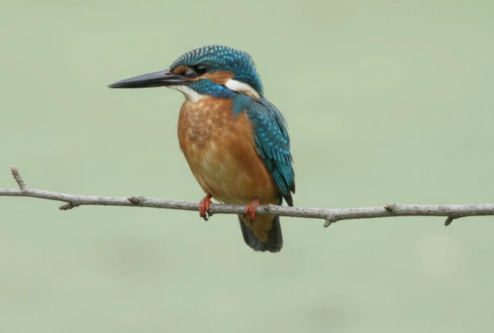
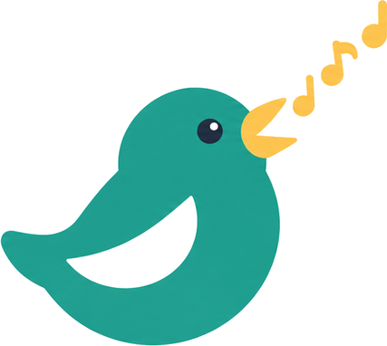
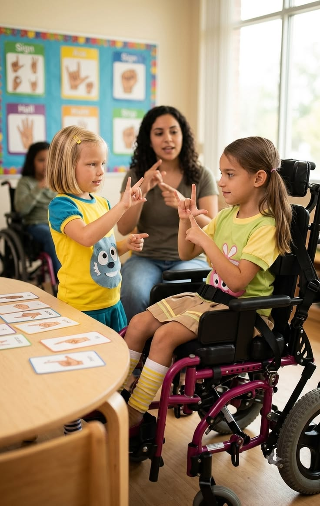
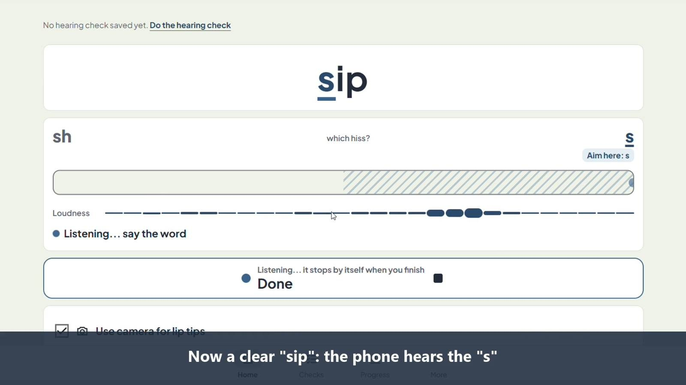
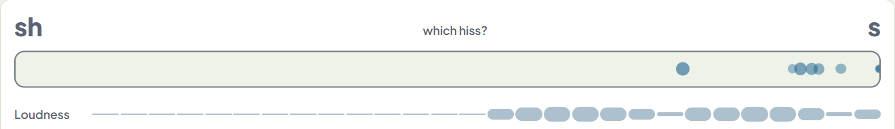

SeeSpeakSpeech practice for kids who are hard of hearing, for the days between speech therapy sessions.
Michael Fischbach · Holly Steen · Mason Di Leo · CPVC × OCOB × CPE AI Hackathon, Cal Poly, Nov 2026
The gap
School speech therapists carry more students than they call manageable
Students per school speech therapist, median
of about 31 minutes each, for hard-of-hearing kids who get school speech therapy
Almost 1 in 3 hard-of-hearing kids got no services at all
Speech or deaf-education services, as their parents reported (155 children)
A week of school speech therapy
Average for kids who get it: 1.7 × 31 minutes

Photo: Pinterest
Sources: ASHA 2026 Schools Survey, caseload (median actual 50, median manageable 40). Page et al. 2018, 155 hard-of-hearing school-age children: 1.7 sessions a week of 30.7 minutes for those seen by a school speech therapist; parents of 30% (46 of 155) reported no services. 52 minutes is 1.7 × 30.7, our arithmetic.

Demo video, 2:13 · github.com/whynobro/SeeSpeakAi/releases/tag/demo-video
How the AI works
1 · On the phone
Measures the hiss 50 times a second. Result at once.
2 · Numbers only
Never your voice. Never your video. Names removed from reports.
3 · Claude
Builds the practice plan. Writes one tip after every try.
Why not speech recognition? It gets far more words wrong for deaf speakers
Share of words transcribed wrong, average of four systems.
Source: Zhao et al., Laryngoscope 2025 (online 2024): 24 deaf and hard-of-hearing adults, 9 hearing adults. Claude never hears audio and never decides the verdict.
Market
Start
US students served in school for hearing loss. They can’t hear their own “s”.
Grow
9 in 10 school speech therapists treat speech sound disorders
Share of school speech therapists, by survey year
Same meter scores s, sh, z and ch.
The meter, live
What the phone measures, 50 times a second

Sources: NCES Digest table 204.30, 2022-23 (ages 3 to 21 served under IDEA for hearing impairment, about 70 thousand). ASHA Schools Surveys 2022, 2024, 2026 (share of school speech therapists serving speech sound disorders, as reported in the 2026 trends report).
Try it on your laptop right now.
Type this
seespeak
.vercel.app
Click “Try it now”, allow the microphone, then say “sip”. Chrome or Edge works best.
Michael Fischbach · Holly Steen · Mason Di Leo · Built this weekend with Claude Code and the Claude API
Backup · What’s built, what’s next
Built this weekend
3 next steps
→ or Space: next · ←: back · F: full screen